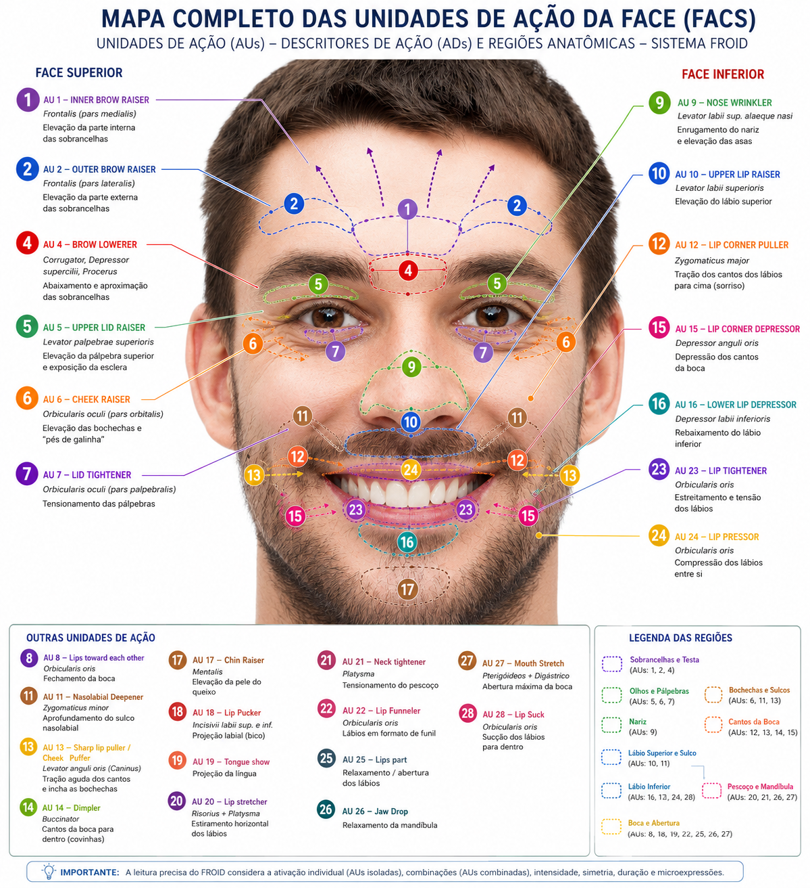

Technology
From raw audio capture to the visual reading of the 12 Zones — what is standard signal processing, what is proprietary framework, and where each one ends.
Step 1
Every session begins with a 60-second calibration. During this window, the system establishes the mean and variability of the patient's fundamental frequency (F0) at rest, maps the noise profile of the room and microphone, and locks (baseline_locked) the reference values that will be used for every comparison in the session.
This exists because absolute acoustic analysis makes no clinical sense: a naturally low voice cannot be mistaken for psychomotor retardation, and a high-pitched voice cannot be read as hyperactivation. Each patient is compared only against themselves.

Baseline F0 (mean and standard deviation), power spectral density per band (via FFT in the browser — Web Audio API, no DSP library on the backend), and background noise. Calibration is vocal: there is no facial baseline — Action Units are evaluated against an absolute threshold (0.30), not against the patient's own resting state.
Session state implemented as a state machine CALIBRATING → LIVE → ENDED, with a BASELINE_LOCK action triggering the lock of reference values (froid-dashboard/src/pages/LiveSession.tsx).
Step 2
At every analysis window, FROID extracts a set of vocal features and compares each one against the locked baseline.
Cepstral coefficients on the Mel scale and their derivatives (Δ, ΔΔ). In the anchor study, MFCC7 under negative content is predictive of the depression scale (β=0.90) and MFCC9 correlates inversely with Hamilton somatic anxiety (β=−0.45) — which is why FROID reads ΔΔMFCC9 as a marker of accelerating laryngeal tension.
Fundamental frequency and zero-crossing rate, extracted continuously and compared to baseline variability.
Normalized internal indices (not classic clinical jitter% / shimmer dB) derived from scaled ZCR and the coefficient of variation of the RMS envelope — they signal relative vocal instability.
In the production code (LiveSession.tsx), these metrics are explicitly labeled as proxies, with a documented unit:
In other words: they do not directly equate to jitter in % or shimmer in dB as defined by Boersma & Weenink (Praat). They are a derived proxy, used as a relative signal of instability — not as a normative clinical value. Validated physical extraction (Praat-equivalent) is on the roadmap.
Sustained spikes in the Delta-Delta derivative acceleration (ΔΔMFCC9 > 1.8) signal reflexive vocal cord micro-contractions and serve as a biophysical trigger for somatoaffective friction. The 1.8 is a calibratable engineering threshold, not a published constant.
Step 3

The patient's browser computes 52 facial blendshape coefficients (MediaPipe FaceLandmarker / ARKit) and sends them to the server, which converts them into intensities for 16 Action Units of the Facial Action Coding System — the descriptive system of facial movement by Paul Ekman and Wallace Friesen. Image and video never leave the clinician's equipment. There is no temporal modeling: each reading is evaluated on its own.
An AU counts as active from 0.30 upward. When the active AUs form one of the six combinations the engine knows how to read (e.g., AU12 with AU23 or AU24 — a social smile over lip compression), the corresponding zone receives a facial dissonance mark, and that zone's acoustic deviation is then multiplied by 2.5.
The two facial maps, what each AU means, and the six combinations →
Binary form applied in production when the facial dissonance flag triggers. The value 2.5 is a FROID product parameter, not derived from a published study — treat it as calibratable engineering heuristic, not a scientific constant. The full IDM assembly (average of the 12 zones, each already carrying its own M_fac) is in Step 5. There is no continuous form implemented.
The classic hypothesis that absent AU6 indicates a forced smile has partial support in the literature, but there is also recent research that directly contests it, finding that AU6 relates more to smile intensity than to emotional authenticity. FROID's engine does not implement this configuration: none of the six composition rules tests for the absence of AU6. Aversion suppression is detected by AU12 together with AU23 or AU24 — see the six combinations.
Step 4 · Proprietary framework
The visual, interpretive layer that organizes all the preceding signals into a circular map of 12 zones, each associated with a clinical theme dichotomy.

A proprietary visualization interface that distributes vocal spectral energy across 12 bands, each tuned to a note of the chromatic scale and associated by FROID with an interpretive clinical theme (e.g., Zone 3 — "Sadness vs. Inner Peace"). The physics behind it (power spectral density via FFT) is real and measurable.
There is no peer-reviewed literature validating the specific mapping between a narrow Hz band and a psychological theme. The structure is an adapted transposition of commercial voice biofeedback technology. We treat this explicitly as a FROID product heuristic.
Step 5 · Proprietary framework
The human brain does not run Fourier Transforms or tally dozens of facial coefficients per second while sustaining the therapeutic alliance. FROID solves this bottleneck through dimensionality reduction: it fuses voice, face, and semantics into two vectors that run continuously on the care panel.
The "speedometer" of the session's biological energy — quantifies, on a 0–100 scale, the patient's expressive intensity and psychomotor vitality every second.
It is computed over the mean of the absolute deviations of the 12 Zones — vocal energy deviations against the session's own baseline, already multiplied by 2.5 in zones carrying facial dissonance. The face enters through that multiplier; there is no semantic channel in the IPM, and no measurement of AU contraction speed.
Clinical reading: a sustained drop points to lethargy or depressive motor retardation; frequent spikes indicate hyperactivation, anxious agitation, or racing thoughts.
The "compass" that points to the direction and coherence of that energy — assesses whether the patient's reactions are congruent with the content being discussed, or whether there is a symmetry break revealing resistance, repression, or somatization.
Compares instantaneous readings against the individual baseline locked in the first 60 seconds. When the facial and vocal channels contradict each other — a relevant acoustic deviation in a zone where the face fired one of the six composition rules, for instance a smile over compressed lips (AU12 with AU23/AU24) — it applies the Facial Dissonance Multiplier to that zone, shifting the index toward alert colors.
Clinical reading: locates emotional "hot spots" — reveals Somatoaffective Dissonance (False Calm), when stress has been repressed from the face but keeps tensioning the larynx.
σ is the sigmoid that compresses the result into 0–100. The center is not a constant: it is the resting activation measured during this session's calibration, which makes the index comparable across microphones and rooms. With no measured rest (center ≤ 0.02) the index sits at 50, declaredly neutral, rather than feigning precision. The 1.2 gain is a FROID product parameter.
The multiplier is binary and per zone: 2.5 where one of the six facial rules fired, 1.0 elsewhere. There is no continuous form, and no apex confidence — the engine does not model the temporal phases of an expression. Implemented in froid-server/froid_core.py → calculate_multimodal_deviation(), mirrored on the panel in froid-engine.ts → calculateIDM().
Engineering honesty: the weights, the fusion coefficients, and the 2.5 itself are product parameters refined in the lab — qualified clinical hypotheses, not published scientific constants. Definitive population validation depends on the anonymous Data-Froid (k-anonymity + one-way hashes). See framing in Science.
Step 6 · Proprietary framework
In testing with professionals, a screen that changes every few seconds proved too fast to assess all the metrics with clinical calm. FROID's response: raw processing continues at high resolution (1-second cadence), but the visual presentation is stabilized within a configurable clinical window — no freezing, and no loss of accuracy.
Every 1 minute, FROID closes a technical micro-window. The screen shows a 5-minute moving clinical window, made up of the last 5 micro-windows — consolidated by temporal weighted average, never a simple average: the current minute weighs more than the previous ones.
The professional sees stability, but FROID keeps reacting gradually to what is happening right now.
Real time — no visual freezing
1 minute — light clinical window
3 minutes — dynamic supervision
5 minutes — recommended default
7 minutes — slower/more reflective session
"Real time" means charts and indicators follow the available technical cadence (≈1s/10s depending on the metric's origin) — it is not absolute laboratory real time, but rather the absence of clinical screen freezing.
The panel displays Clinical window: 5min and the counter Next update in 03:42, with the Update now button always available.
Safety exception: a critical alert breaks the stabilization and updates the screen immediately, ahead of schedule.
m_k is the consolidated value of technical micro-window k (1 minute). Raw processing continues at 1-second cadence; only the presentation layer is stabilized.
Proprietary reference: FROID_Estabilizacao_Clinica_Da_Tela.md — documents the metric, the math, and the clinical rationale, and is part of the knowledge base consulted by FROID Explains. The session's semantic segments are not affected by this module.